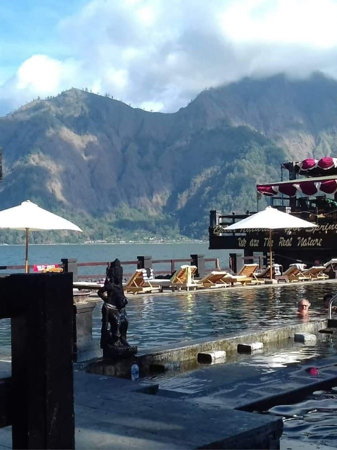

Experience 01 · Hosted by Aris
Experience Bali as a Local
Most visitors see Bali’s temples and rice fields. Few understand them. Spend the day with Aris and learn why things are the way they are, from someone who lives it.
- Full day · about 8–9 hours
- Private · 1–4 guests
- By car
More than sightseeing
What you'll understand by the end of the day
Aris explains as you go, in plain English, and there's always time for questions.
Daily offerings
What canang sari are, who makes them, and why they’re everywhere.
Temples and ceremonies
How to visit respectfully, and what the shrines, colours and processions mean.
Village and family life
The family compound, the banjar (village council) and how a community runs.
The Balinese calendar
Why there always seems to be a ceremony, and how the days are chosen.
Food and markets
What Balinese families actually eat, and where.
Your questions
Ask anything. That’s the point of the day.
Times are a guide, not a schedule
A sample day: village and culture
Aris shapes every day around you on WhatsApp before you go.
- 7:30
Morning market
Start where locals shop, at [market Aris knows]. Try snacks and fruit you won’t find in a supermarket.
- 9:00
Breakfast at a family warung
[Warung name]. Coffee and a simple Balinese breakfast.
- 10:30
A traditional village
How a family compound works, the household temple and the daily offerings, explained by someone who grew up with them.
- 12:30
Lunch
At a warung Aris eats at himself.
- 14:00
Temple visit, where appropriate
Sarongs provided. What the shrines, offerings and ceremonies mean.
- 15:30
Local makers
[One or two artisans or small family businesses Aris knows]. No commission shopping.
- 17:00
Back to your hotel
Or a drop-off wherever suits you.

Or shape your day around…

Coffee and the volcano
Kintamani: a real coffee producer [producer Aris knows], a tasting, coffee looking across to Mount Batur, and lunch with the volcano in view. About 2 hours from South Bali.
Food and markets
Morning markets, warungs and the dishes Balinese families eat, with the stories behind them.
Temples and ceremonies
A day planned around temples and, if the calendar allows, a ceremony you can respectfully watch.


Is it for you?
- First time in Bali
- Curious about culture
- Couples and small groups
- Anyone who’s done the main sights
Included
- Private car with fuel, parking and tolls
- Tastings and warung coffee (coffee tasting on Kintamani days)
- Temple donations, sarong hire and Kintamani entry fees
- Water
- Pickup in South Bali or Ubud
Not included
- Lunch
- Entry tickets at other paid attractions
- Anything you choose to buy
Good to know
- Wear clothes that cover shoulders and knees for temples
- Ceremony days can change the route; Aris plans around them
- Bring a light jacket on Kintamani days, the highlands are cooler
From a guest
[Reviews that mention this experience appear here automatically]

Plan this day with Aris.
Send your dates, how many of you there are and where you're staying.
Message Aris on WhatsApp